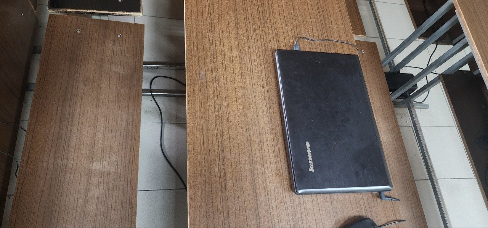
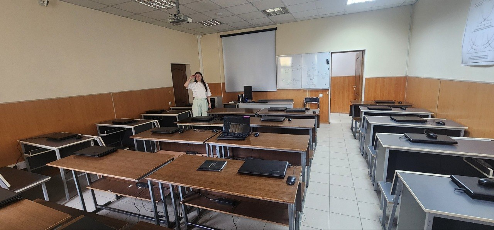
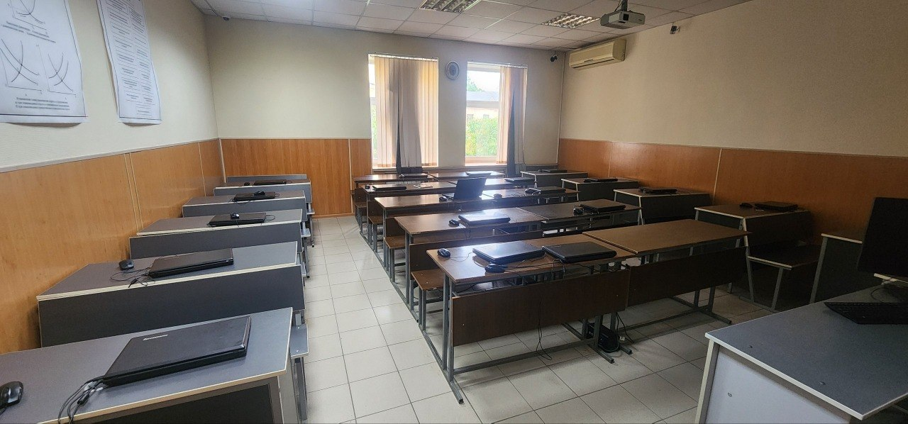
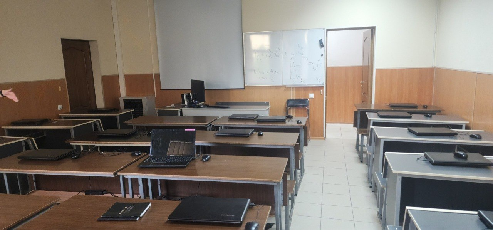

Фотофиксация и разбор проблем
Во время проведения аудита мы сделали фотографии основных зон аудитории 6245 и детально разобрали обнаруженные технические и эргономические недостатки.

Фото 1: Эргономика посадки и кабель-менеджмент
Обнаруженные проблемы: Деревянные лавки без спинок заставляют студентов сутулиться, вызывая боли в пояснице уже через 30 минут работы. Пространства на столе мало, а зарядный кабель от ноутбука свободно свисает под стол, мешая ногам и рискуя быть вырванным из гнезда.

Фото 2: Общая планировка и плотность посадки
Обнаруженные проблемы: Высокая плотность столов. Проходы между рядами узкие. Студенты сидят вплотную друг к другу. Экран проектора висит близко к первому ряду, что перенапрягает глаза студентов, сидящих впереди. Все ноутбуки закрыты, так как система загружается очень медленно.

Фото 3: Освещение и вентиляция
Обнаруженные проблемы: Окна закрыты плотными шторами из-за бликов на экранах, что блокирует свежий воздух. Старый кондиционер на стене работает только на охлаждение рециркуляционного (уже выдохнутого) воздуха и не обеспечивает притока кислорода, из-за чего в классе быстро становится душно.

Фото 4: Преподавательская зона и ноутбуки
Обнаруженные проблемы: На столе преподавателя установлен старый ЖК-монитор с плохими углами обзора. В углу около двери стоит мобильный обогреватель/очиститель, загромождающий проход. Кабели питания проложены открытым способом по плинтусу без защитных коробов.